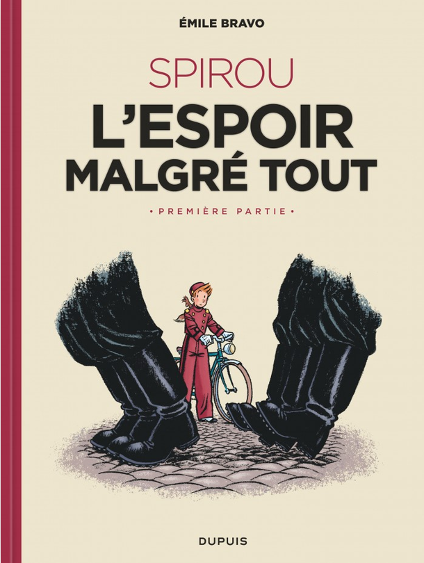
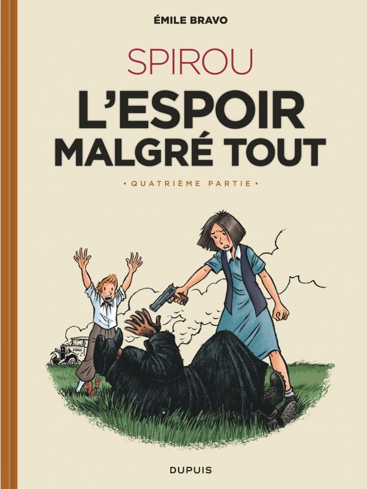
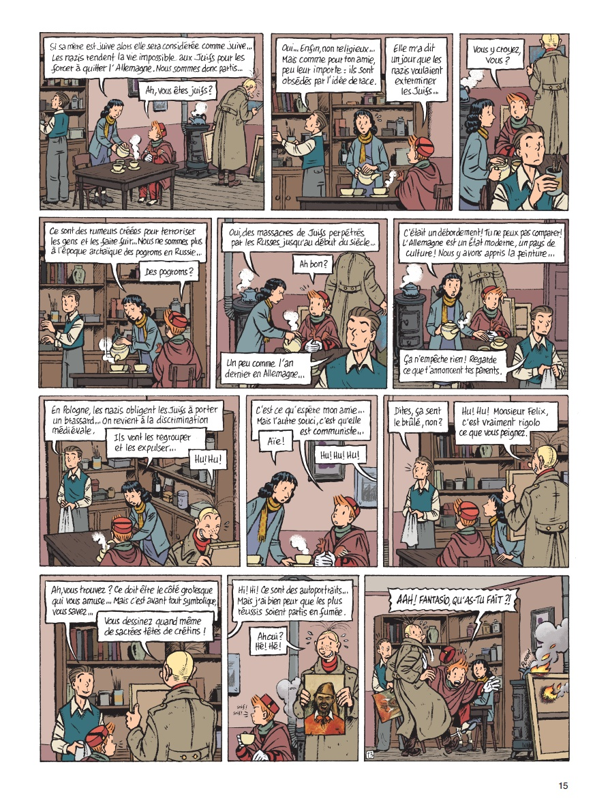

J’ai découvert Emile Bravo dans Okapi avec sa série Une épatante aventure de Jules, quelque part autour de l’an 2000. Quelques années plus tard, en 2008, il nous offrait sa vision de Spirou avec Le Journal d’un ingénu publié dans la collection Le Spirou de…. On retrouve dans cet album un très jeune Spirou débutant comme groom à Bruxelles en 1939. Alors que la guerre couve et que des négociations sont en cours entre Allemands et Polonais dans son hôtel, il rencontre Fantasio, une sorte de paparazzi chaotique obsédé par les scoops et les affaires people. Et c’est une super BD, clairement une des meilleures de la série de spin-off. Entre 2018 et 2022, soit une décennie plus tard, Emile Bravo s’est décidé à en raconter la suite en sortant les quatre tomes de L’espoir malgré tout, qui se déroule cette fois pendant la guerre, toujours en Belgique. Je n’y ai pas trop prêté attention, mais le choeur de louanges qui a accueilli chaque sortie m’est bien parvenu et je me suis finalement penché dessus récemment.

Plutôt que d’aborder chaque épisode séparément, je vais revenir sur l’impression que l’ensemble m’a laissé. Je dirais qu’on est loin d’une simple série d’albums de Spirou. C’est autre chose, une prouesse, celle de s’adresser à tout le monde, enfants, ados et adultes, sans rien sacrifier à la complexité qu’exige ce type de récit, mais en restant clair et même très divertissant. Dans ce récit, on croise une large variété de comportements adoptés par les Belges sous l’occupation nazie, de la collaboration la plus franche (ça cause du rexisme et de la Ligue nationale flamande) à la résistance sous toutes ses formes (le réseau Comète, par exemple), en passant par toute une gamme d’ambigüités. Le rôle de l’Eglise n’est pas oublié, prenant la forme de deux abbés bien différents, l’un de type conservateur coincé et l’autre nettement plus social, sorte de représentation de la gauche chrétienne.
Spirou conserve tout au long une posture de naïveté et de vertu scoute pas loin d’être excessive, tandis que Fantasio joue le rôle du gars entier, tout aussi naïf mais beaucoup moins vertueux et principale source de gags (avec le groupe d’enfants bruxellois sur lesquels Spirou garde un oeil). L’auteur aborde bien sûr le sort des juifs, avec notamment le couple formé par Felix Nussbaum et Felka Platek, avec qui nos héros se lient rapidement d’amitié et dont j’ai finalement appris avec stupéfaction qu’ils avaient vraiment existé (j’aurais pu m’en douter). Dans Jules, j’avais déjà été impressionné par la capacité d’Emile Bravo à aborder avec simplicité et humour des problèmes complexes (scientifiques, éthiques, religieux,…) et cela se confirme complètement ici. C’est une oeuvre précieuse.

Sortie : 2018 (tome 1), 2019 (tome 2), 2021 (tome 3) et 2022 (tome 4)